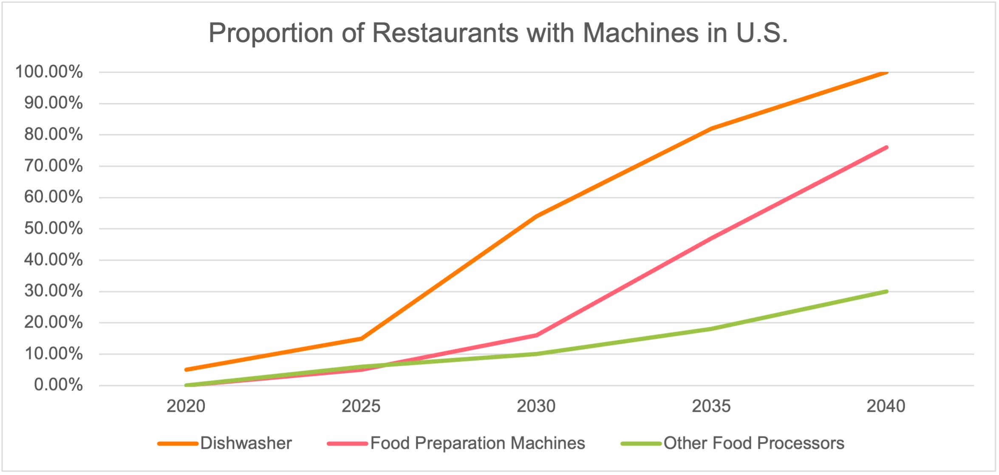
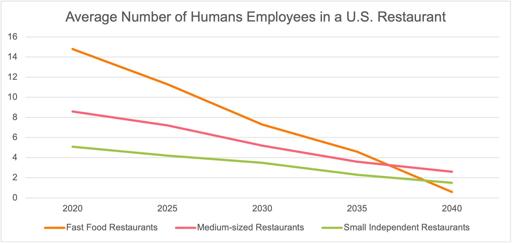
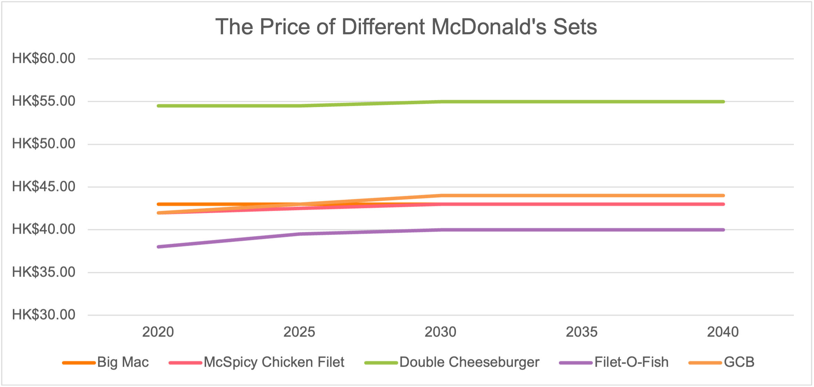
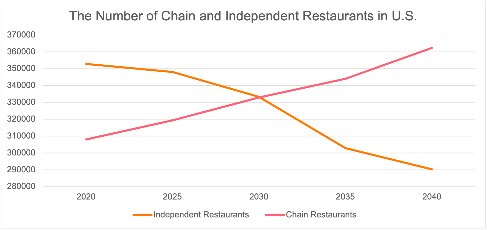

The Disappearance of Humans in Restaurants
By Xu Chi Wing, 3036063553
Published at 10:00 a.m. EST, January 1, 2040
Phenomenon in restaurants, especially fast-food
McDonald's, a leading fast-food chain, recently announced its plan to replace its human workforce with robots in all its restaurants by 2040. McDonald's is a pioneer in staffing innovation, introducing automatic ordering systems and mechanizing food preparation jobs. As of the first day of 2040, the final human employee at McDonald's had retired. We are privileged to present an exclusive interview with him. There are some highlights:
Interviewer: How did you feel when you heard the announcement
from McDonald’s?
Leo: I was so shocked when I found out that McDonald’s was firing
all the humans. It was a roller coaster of emotions. I felt proud that I
had seen so much change, but also kind of sad that it was the end of
something amazing. I thought back to how it all began, with those touch
screens for ordering and then the machines taking over the kitchens. It
was amazing how far we had come. It was the end of an era where people
worked at a fast-food place like McDonald’s.
Interviewer: Can you elaborate on how machines are gradually
replacing human jobs?
Leo: Absolutely. The transition began with the introduction of
new ordering systems. Customers were given the option to place their
orders either through their phones or via machines installed within the
restaurants. This was followed by the deployment of robots that roamed
the restaurant, collecting and cleaning trays. Next, we saw the
implementation of packing machines, designed to efficiently package food
into their respective containers. The final phase of this transformation
was marked by the development and distribution of fully automated food
processors across all our restaurants.
Many fast-food chains, following McDonald's lead in using robots, have adopted automation, signaling a widespread trend in the restaurant industry. Looking beyond fast food, we find that many other restaurants have incorporated different amounts of automation. Even in smaller establishments with limited automation, machines such as dishwashers and food preparation equipment are now common. This shift is reflected in the fewer humans present in modern kitchens. Our observations were supported by our surveys, and the results are as follows:
 The Truth Behind the Phenomenon
Several factors drive the growing trend of restaurants adopting robotic technology to replace human labor. This section will explore some possible key dimensions of this trend.
Cost
The initial cost of machines is noticeably lower than hiring human employees, especially when considering the costs of onboarding, training, and benefits. Human employees may require several months to become productive members of the team, while machines can be operational with a trained AI model or programmed software. During the training process, there is a high probability that employees will decide for themselves to leave their jobs, in particular those who work in stressful environments like kitchens. This can lead to substantial cost savings for restaurants, especially in the early stages of growth.
Machine maintenance costs are also significantly lower than hiring human employees, due to several factors. First, regular machines can operate for at least three to five years without major issues, resulting in extremely low maintenance costs over time. Second, machines may only require a biannual or annual inspection which is considerably less expensive than that required by employees who need monthly salaries. Third, machines can work without limitations, while employers must comply with labor laws and provide certain benefits to human employees, such as paid time off, health insurance, and retirement contributions. These additional costs can add up significantly over time.
Efficiency and Quality
Machines can work significantly more efficiently than humans, as they do not require rest and can operate 24/7. This is a major advantage in the restaurant industry, where work is often strenuous, and employees need frequent breaks. The balance between quality and quantity is a challenge for human beings, which can affect customer experience importantly. In contrast, machines can maintain a high level of quality even in harsh environments with long hours and heavy workloads. In addition, these machines shall strictly comply with the restaurant's instructions which will allow it to ensure complete hygiene and reflect its true quality.
Impacts of the phenomenon
In the previous section, our focus was primarily on the reasons prompting restaurants to introduce these changes. Now, let us delve into the consequential impacts that these changes have on other stakeholders.
Positive Impacts
While it is apparent that the implementation of robotic technology brings benefits to restaurants, its positive impact extends to consumers as well. As previously mentioned, the significant cost reduction for restaurants can lead to lower prices for consumers. Take McDonald's, for instance. Despite inflationary pressures, the price of the perennial favorite, the Big Mac, has remained consistent over the past two decades. Here are some related statistics:
Despite the price decrease, both the speed and quality of service have witnessed a remarkable improvement. Burger King, a fast-food restaurant highly integrated with robotic technology, develops an elaborate grading system for burgers. This system evaluates various criteria, including source distribution, filling ratio, and overall shape, assigning grades ranging from 0 to 100. Using this system, Burger King grades different burger restaurants and creates a report in 2038. Results indicate that, although most restaurants employing robotic technology have a relatively lower average score than those relying purely on human labor, the scores are more centralized. To express this mathematically, the standard deviation of scores from modern burger restaurants is only 3.25, significantly lower than the 14.31 observed in traditional restaurants. Beyond quality metrics, the report also explores the time required for restaurants to prepare their signature dishes. Unsurprisingly, modern restaurants outpace traditional restaurants, completing the process nearly three times faster. In summary, as consumers, we stand to benefit from lower prices, enhanced quality, and expedited service in these modernized restaurants.
Negative Impacts
Every innovation entails costs. Although it has obvious benefits for the restaurant sector, there are fundamental drawbacks that require careful consideration and proactive measures to mitigate them.
First and most obviously, restaurant automation raises the unemployment rate. According to the statistics from Statista (2022), there were approximately 12.5 million people employed in the restaurant industry in the United States in 2022. However, as estimated by Allie in 2038, this figure has dropped to only 1.6 million. Even with a population growth of about 26 million in the U.S., it is resulting in a shocking 87% decline. The unemployment rate in the US is also reflected in this situation. Government data reveals a rise in the unemployment rate from 3.6% in 2022 to 9.8% in 2039. Although this may not be entirely down to the automation in restaurants, it is one of the main factors. Similar situations have been observed globally.
Secondly, it also homogenizes the restaurant industry. While the cost of the food processors decreases over time, it is still costly for an independent restaurant to design and maintain its processors. Consequently, the majority of restaurants are forced to use the same generic processors, which are very limited in their ability to customize them. That makes independent restaurants extremely challenging to separate themselves from their competitor. On the other side, the large chain restaurants can afford to design and develop their custom processors that are optimized for them. This allows them to make dishes that are more unique and complicated which widens the gap between independent and chain restaurants, forming a vicious circle. This situation has also been documented by Statista (2039), which includes the following statistics:
Finally, the restaurant industry may face a downturn. In the previous section, we've mentioned how the costs of food processors have been reduced over time. For certain families, it has become more and more cost-effective to have one at home. Some producers see this as a future trend and are already taking steps towards the development of cheaper, smaller, but feature-rich, fully automated food processors. It encourages people to take a closer look at buying it. We can see that, in the next couple of years, it could be a part of every household's electrical appliance. For the restaurant, this is a serious threat.
Potential solutions for these drawbacks
The escalation of the unemployment rate has appeared as a significant concern in certain countries. Proposals supporting the prohibition of fully automated robotic technology in restaurants, together with the requirement to hire human employees, have been put out as a straightforward solution with the potential to substantially boost employment in the short term. However, this approach fails to address underlying issues. Another suggestion involves the implementation of copyright protection for cooking recipes. These recipes, different from traditional ones, are encrypted, and understandable only to food processors. In this imagined future, restaurants may abandon the responsibility of food preparation and instead sell digital cooking recipes to consumers. In the future, we may not have physical restaurants because the recipe has been digitized which means all our food can be purchased online. Nevertheless, this innovation does not resolve the persisting issue of high unemployment rates. The quest for optimal solutions continues, and we remain hopeful that future innovations will yield more effective resolutions to these challenges.
Comments
Ollie Ronald
Commented at 9:00 p.m. EST, January 1, 2040
As an independent restaurant owner, I'm kind of lost on what moves to make next. I mean, using those fully automated machines feels like we're losing the heart and soul of our dishes. But, you know, every joint is jumping on the automation bandwagon, and human labor costs are shooting through the roof these days. I gotta bring in some automation to keep the prices in check, but some of our regulars are not vibing with it. They say the dishes have lost that special something.
I'm not feeling the idea of banning the automated gizmos, though. We shouldn't be putting the brakes on tech progress. What if the government cut us some slack, like giving a break on hiring humans, you know? That way, we'd be more up for hiring folks and keeping the food unique.
For those digital cooking recipes, I'm not exactly tech-savvy, so I can't dive too deep into it. But I'd be excited to see that happen if it were real. I love coming up with new recipes. That's the whole reason I opened this restaurant. If these digital recipes become a thing, I could focus on the fun side of cooking rather than worry about running this place. Sounds like a win-win to me.
Eliza Randall
Commented at 1:00 p.m. EST, January 2, 2040
As a normal consumer, I don’t see a big difference between human-made and robot-made food. If I'd had a chance to pick one, it would have been the robot-made meals as they were cheaper, faster, and tasted like food from humans. However, the food is indeed getting kinda homogenized. A while back, I ordered two the same dishes in two different restaurants, and it struck me how menus are starting to blend. It’s getting challenging to find something special to chow down on.
Your comment: